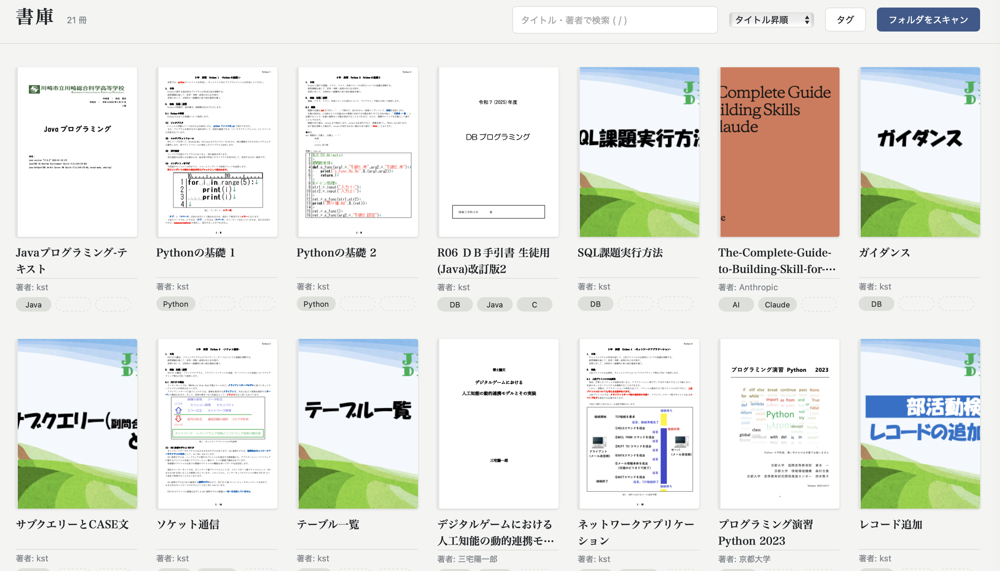

 BookLib PDF管理アプリです。PDFで保存している書籍を、Finderよりも管理しやすくしたいという思いで制作しました。 ジャンルや著者名で検索したり、ファイル名は弄らずにタイトルを変更して管理したり出来ます。 Python SQLite MacOS専用
Battle AI — シューティングゲームAIの作成 敵AIが主役の1vs1シューティングです。 7つの戦術を使い分けるユーティリティAIを、公平性ルール(機械的な反射の禁止)の中でどこまで強くできるかに挑みました。 立ち回りのパラメータはPython+Optunaの自動対戦ループで最適化し、対ボット勝率を50%から70%へ。ブラウザでプレイできます。 Unity ゲームAI Optuna